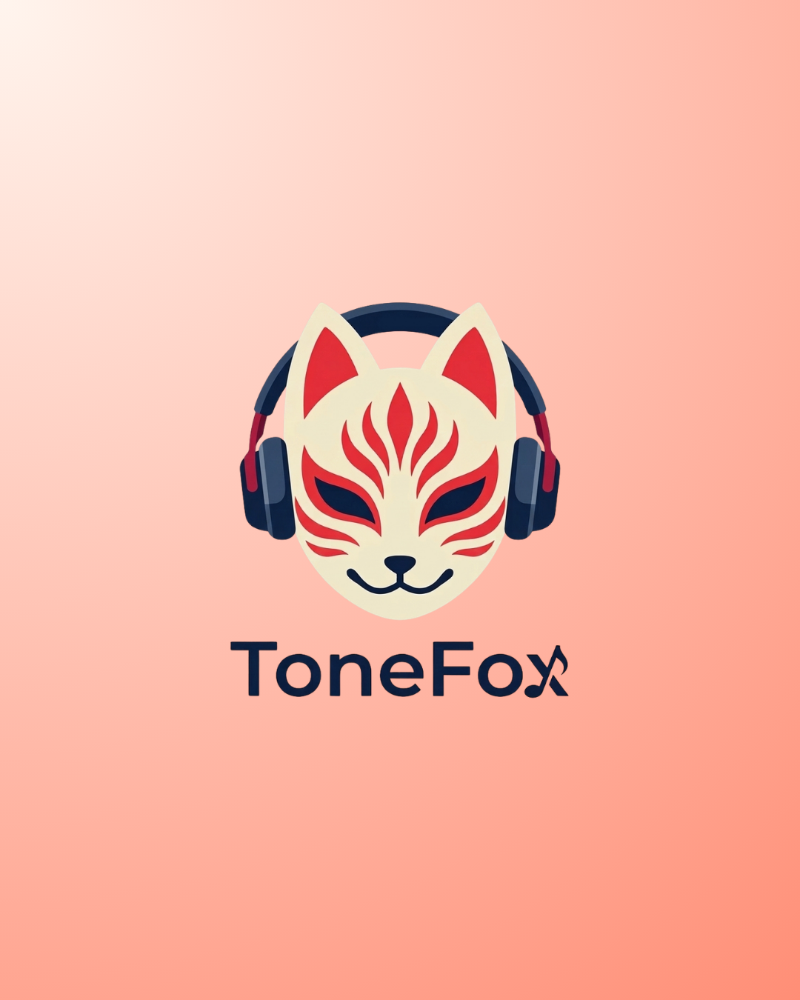
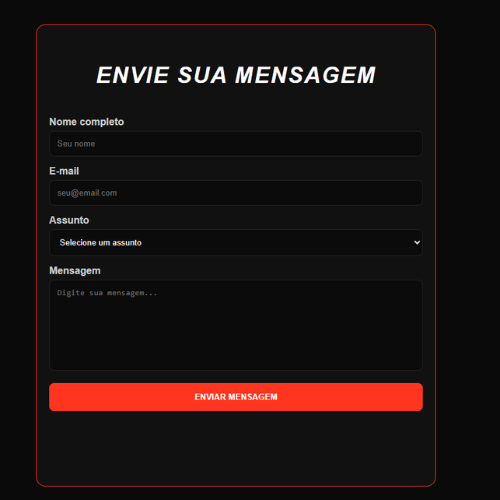
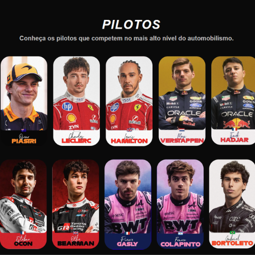
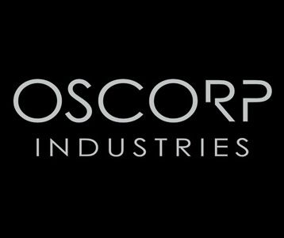
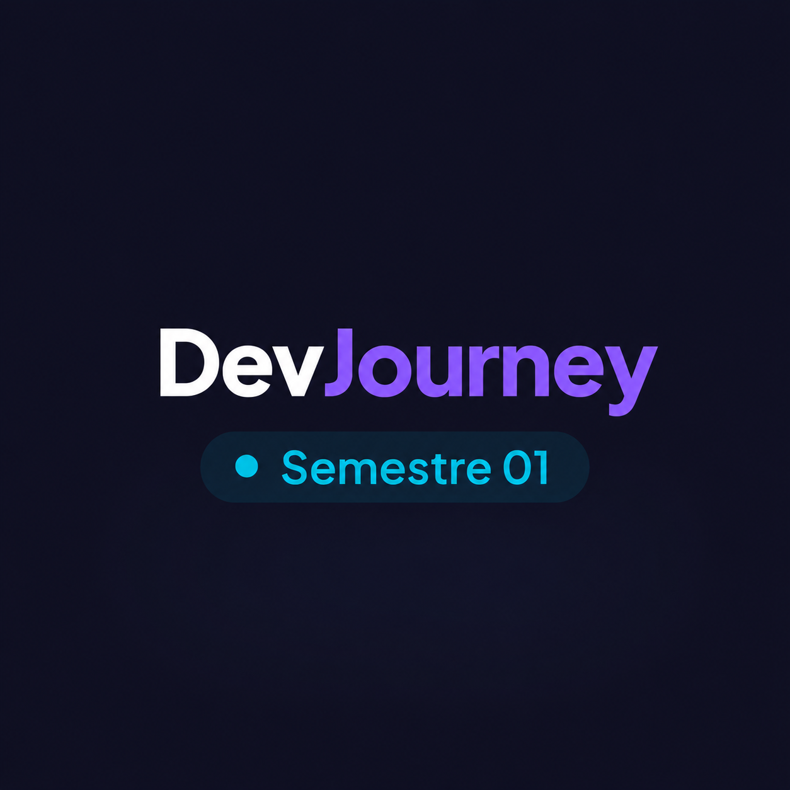

01
Módulo 01
Conhecendo o Computador & Sistemas Operacionais
Aprendizado sobre o funcionamento dos computadores, seus componentes principais e o papel dos sistemas operacionais no dia a dia.
Esta timeline apresenta minha trajetória de aprendizado ao longo do semestre, reunindo os principais conteúdos estudados, desafios superados e projetos desenvolvidos durante minha formação em desenvolvimento web.
Aprendizado sobre o funcionamento dos computadores, seus componentes principais e o papel dos sistemas operacionais no dia a dia.
Introdução aos métodos ágeis e ao Scrum, entendendo como equipes organizam tarefas, planejam entregas e trabalham de forma colaborativa.
Estudo dos fundamentos do design, incluindo cores, tipografia, gestalt, contraste e organização visual para criar interfaces mais agradáveis e intuitivas.

Desenvolvimento de um logotipo profissional pessoal para um desenvolvedor de sistemas.
Acessar Projeto →Criação do posicionamento da marca, definindo sua personalidade, valores e a forma como ela se comunica com o público.

Logotipo reunindo conceitos, identidade visual e diretrizes de comunicação da marca.
Acessar Projeto →Criação de protótipos e interfaces utilizando o Figma, explorando componentes, organização visual e experiência do usuário.

Protótipo desenvolvido para aplicar os conceitos de design e navegação estudados, com o foco de ser um app de música.
Acessar Projeto →Primeiros passos no desenvolvimento web, entendendo como funcionam os sites e a estrutura básica de páginas em HTML.
Criação de formulários utilizando diferentes tipos de campos e recursos de validação nativos do HTML.

Formulário desenvolvido para praticar coleta de dados e validações.
Acessar Projeto →Aprendizado dos conceitos fundamentais do CSS, estilização de elementos e funcionamento do modelo de caixas.
Estudo das principais técnicas de layout do CSS para criar páginas organizadas e adaptáveis a diferentes conteúdos.

Página desenvolvida para praticar a construção de layouts utilizando CSS Grid, com o tema de F1.
Acessar Projeto →Criação de animações e efeitos visuais utilizando transições, transformações e keyframes em CSS.
Coleção de animações desenvolvidas para explorar interatividade, transições baseado no tema Star Wars
Acessar Projeto →Adaptação de páginas para diferentes tamanhos de tela, garantindo uma boa experiência em computadores, tablets e celulares.

Landing page responsiva criada para funcionar corretamente em diversos dispositivos, com o tema da empresa fictícia Oscorp do universo Marvel.
Acessar Projeto →Projeto final reunindo os conhecimentos adquiridos ao longo do semestre em uma aplicação completa e responsiva.

Plataforma que apresenta a evolução dos estudos e projetos desenvolvidos durante o semestre.
No ínicio do semestre, eu entrei no curso com um conhecimento limitado sobre Desenvolvimento de Sistemas,mas sempre tive a certeza de que queria seguir nessa área para minha carreira. Mesmo sem experiência prévia, eu estava determinada a aprender e me desenvolver. Eu tinha uma compreensão básica de conceitos de computação, mas não tinha habilidades práticas em programação. Entrei no curso sabendo que encontraria desafios, mas também estava determinada a correr atrás do conhecimento necessário para crescer na área. Com isso, cada aula, atvidade e desafio me ajudaram a crescer um pouco mais.
Hoje, apesar de ainda estar aprendendo, já consigo entender muito mais do que quando comecei. Vários conceitos que antes eram confusos agora fazem sentido, e eu consigo aplicar o que aprendi em projetos práticos. Sinto que evoluí bastante, não apenas em termos de conhecimento técnico, mas também em minha confiança para enfrentar desafios e buscar soluções. Cada aula, projeto e atividade concluida contribuiram para minha evolução, reforçando a cada dia a minha certeza de que escolhi a área certa para minha carreira.
Meu próximo objetivo é continuar evoluindo e aprimorando minhas habilidades na área de Desenvolvimento de Sistemas. Quero me aprofundar em linguagens de programação, entender melhor sobre lógica, desenvolver projetos cada vez mais completos e ganhar confiança para transformar minhas ideias em sistemas reais. Sei que estou apenas no começo da jornada, mas quero continuar estudando, praticando e me dedicando para me tornar uma profissional cada vez mais capacitada.